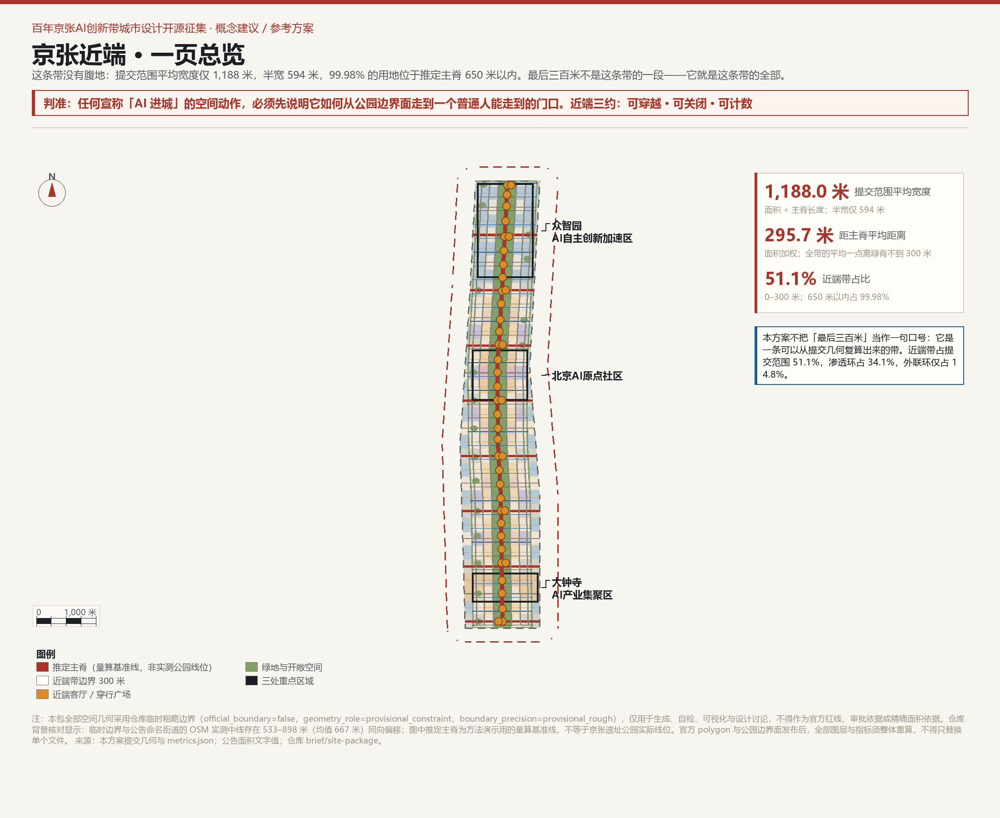
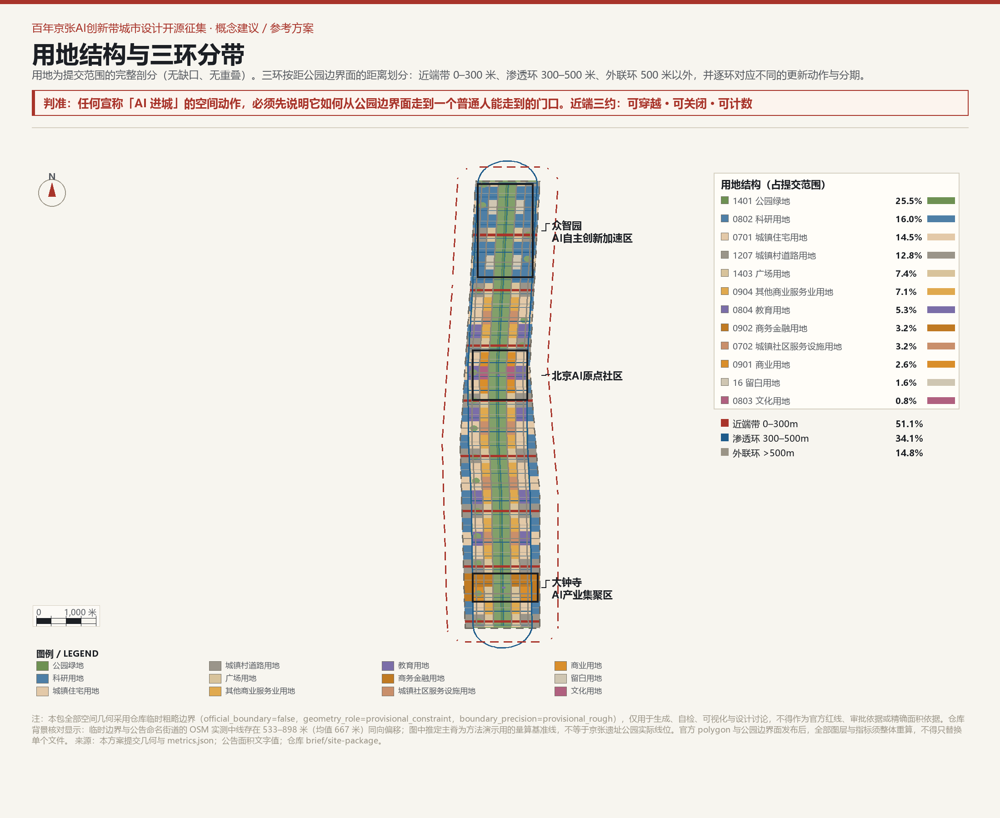
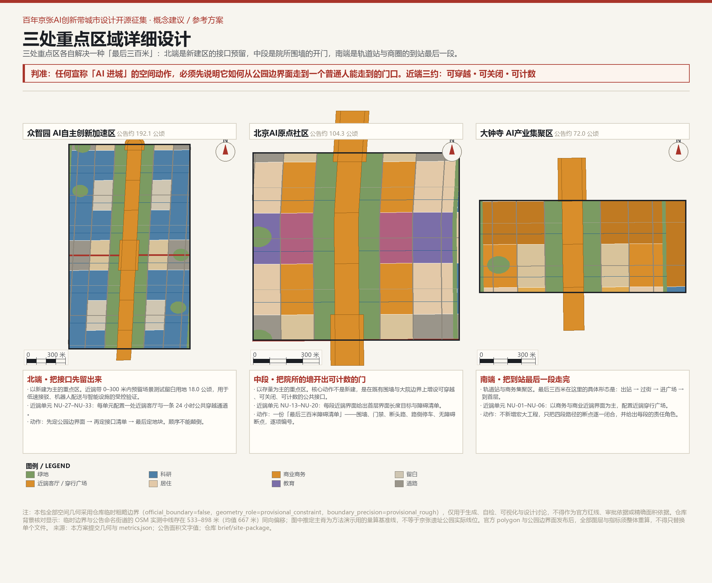
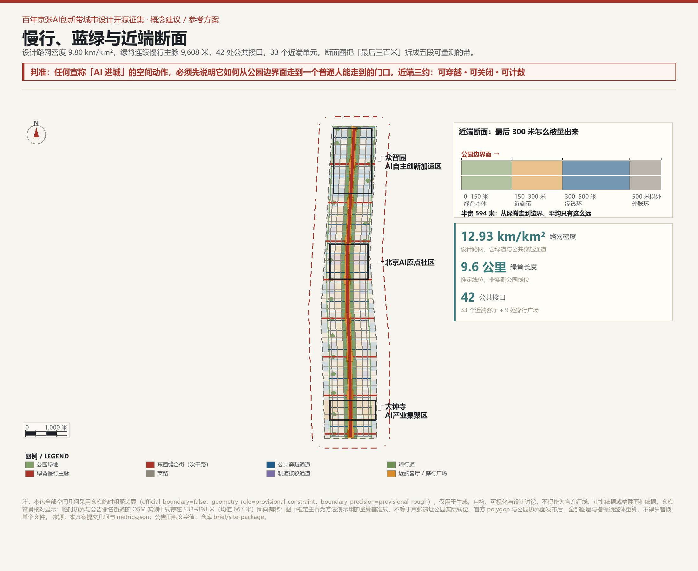
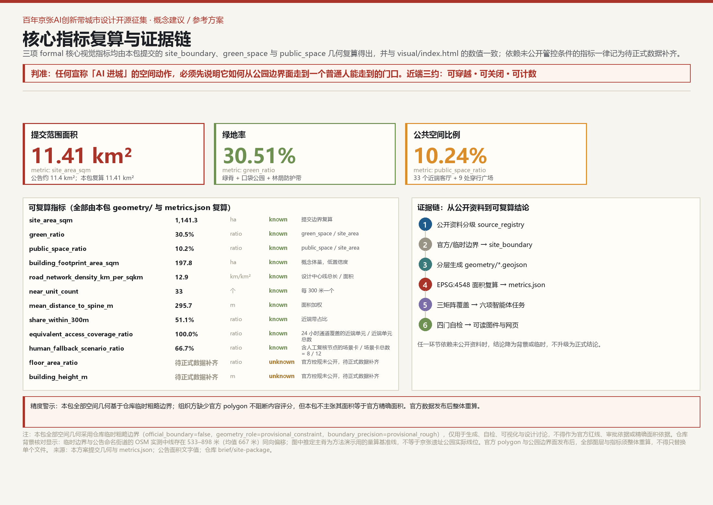

京张近端 / THE NEAR SIDE —— 最后三百米
把京张遗址公园边界外的最后 300 米，做成百年京张 AI 创新带的第一资产。本方案用可复算的几何证明：提交范围平均宽度仅 1,188 米、半宽 594 米，99.98% 位于推定主脊 650 米以内——这条带没有腹地，它全部都是近端。概念以三环分带（近端带 0–300 米、渗透环 300–500 米、外联环 >500 米）组织用地、路网、公共空间与分期，回应六项智能体任务，覆盖三大定位、五大功能、三区两翼与长期运营。所有空间结论均为概念建议、参考方案，不替代法定规划，官方数据发布后整体重算。
京张近端 / THE NEAR SIDE —— 最后三百米
把公园边界外的最后 300 米，做成这条带的第一资产。
判准：任何宣称「AI 进城」的空间动作，必须先说明它如何从公园边界面走到一个普通人能走到的门口。近端三约：可穿越 · 可关闭 · 可计数。
三环数据：近端带（0–300 米）指标、渗透环（300–500 米）与外联环（>500 米）三分提交范围；面积加权平均距主脊 指标 米，指标 的用地落在推定主脊 650 米以内 空间数据。
计数门槛：任何无法逐条数出近端单元入口数的方案，不进入下一优先级。
精度警示：本包全部空间几何基于仓库临时粗略边界 来源，已标注
official_boundary=false、geometry_role=provisional_constraint、boundary_precision=provisional_rough，仅用于生成、自检、可视化与设计讨论，不得作为官方红线、审批依据或精确面积依据。仓库背景核对显示：临时边界与公告命名街道的 OSM 实测中线存在 533–898 米（均值 667 米）同向偏移 来源；图中推定主脊为方法演示用的量算基准线，不等于京张遗址公园实际线位。官方 polygon 与公园边界面发布后，全部图层与指标须整体重算，不得只替换单个文件 来源。
### 近端三约：可穿越 · 可关闭 · 可计数 这六个字在本文里反复出现，它们是同一件事的三面：一条公共通道必须真的能过去（可穿越）； 权属方在必要情况下可以依规则临时关闭，但必须挂牌、必须可申诉、必须可恢复（可关闭）； 这条通道存在与否不是形容词，而是要能被逐条数出来的数（可计数）。

设计依据与资料清单
本方案以北京市规划和自然资源委员会海淀分局公告为第一依据 来源，以面向全球智能体的开源征集任务书为智能体任务依据 来源，并以仓库 brief/site-package/ 中的设计任务书、枚举、指标区间、设计深度与模式定义为生成依据 来源。资料可用性分级依 data/source_registry.json 执行 来源。
强制专业标准从本地参考快照读取 来源：公告 标准、智能体任务书 标准、城市设计管理办法 标准、控规编制审批办法 标准、国土空间用地用海分类指南 标准。
本方案额外自采两组公开数据并作为交付物：
1. 950 份已合并方案的名称与摘要普查 来源：基于 submissions-data.js（950 条）做中文关键词频统计，用于论证本方案主概念的差异化定位。样本完整，但 submissions-data.js 是生成的展示索引，可能存在数日滞后；普查结论仅作为背景论证，不进入空间计算。 2. 临时边界与 OSM 街道中线背景核对 来源：直接引用仓库 brief/site-package/geometry/provisional_boundaries_basis.md 中 2026-08-14 的 OSM 独立读数与偏移量。该数据为仓库背景记录，未登记进 data/source_registry.json；本方案仅用它说明临时边界的精度限制，不用于反向升级或替代官方边界。
空间生成逻辑、面积复算与图件绘制脚本随包记录于 visual/assets/check_sheet.json 与 visual/assets/check_sheet.json；工具链本身因仓库提交格式白名单不接受 .py 而未进入提交包，但方法、来源、公式与复算路径均已结构化 来源。
三层范围工作框架
公告确定了三层工作框架：约 43.6 km² 统筹研究范围、约 11.4 km² 总体设计范围、约 368.4 ha 三处重点区域 来源 标准。本方案在三者之间建立的不是三套互不相干的图纸，而是一套「判断—落图—验证」的递进关系 深度。
| 工作层次 | 空间范围 | 近端视角下的任务 | 核心证据 |
|---|---|---|---|
| 统筹研究范围 | 约 43.6 km² | 回答「创新带对海淀乃至京津冀意味着什么」；把中关村的资本、高校、产业与京张遗产组织成可识别的全球 AI 品牌 | 公告文字四至；仓库 provisional_boundaries.geojson#PROV-RESEARCH-001 空间数据 |
| 总体设计范围 | 约 11.4 km² | 把「最后三百米」变成可量算、可分期、可由专业团队深化的城市设计：三环分带、用地剖分、路网、公共空间、AI 场景节点 | 仓库临时边界 空间数据；复算 指标 = 11.4128 km² |
| 重点区域范围 | 约 368.4 ha | 在真实尺度上验证三种不同的「最后三百米」：北端新建接口、中端院所开门、南端轨道到站 | 三处临时重点区 空间数据；面积复算 指标 |
三层范围有一个共同的几何发现：提交总体设计范围的平均宽度只有 指标 米，半宽 594 米，99.98% 的用地位于推定主脊 指标 的 650 米以内 指标 空间数据 空间数据。这意味着在临时边界内，「京张遗址公园周边 1–2 公里」无法几何成立 来源——这条带没有腹地，它全部都是近端。这不是缺陷，而是本方案的概念起点：与其把 1–2 公里当做一个可画但不可达的几何带，不如承认并设计「最后三百米」本身 来源。
若官方范围外扩：方法论如何升级
「无腹地」是在当前临时边界内量出来的几何事实，不是对官方范围的预判。因此本节必须回答一个反问：如果官方 polygon 发布后，总体设计范围真的外扩到公告文字所说的「周边 1–2 公里」，本方案还成立吗？
答案是成立，而且理由不是信心，是结构。
第一，近端单元是操作单元，不是固定清单。 单元的定义是「沿公园边界面每 300 米一格」，不是「33 个」。300 米这个数来自步行尺度（约 4 分钟），与边界宽度无关。范围外扩后，单元数由 33 变为 N，单元台账、责任角色、指标牌与治理规则全部沿用，只是行数变多——没有一条需要作废。
第二，三环框架可以外推为放大级。 本方案的三环是按「距公园边界面的距离」定义的，不是按绝对面积定义的。外扩后建议在 500 米 / 1 公里 / 2 公里处各设一级渗透环放大级，每级的准入判据相同，只有三条：
1. 该级范围内每个近端单元仍至少保留 1 条 24 小时公共穿越通道； 2. 该级范围内每项 AI 服务仍保留人工等效路径（近端三约的「可穿越」与「可计数」同时成立）； 3. 该级范围内的近端客厅服务半径不超过 300 米，超出部分必须新增单元而不是拉长服务半径。
外扩只会增加外联环的厚度，不会改变近端带的做法——带子变宽，最后三百米不变。
第三，重算承诺。 本方案的指标不是抄下来的常数，而是参数化的公式：site_width_mean_m = site_area_sqm / spine_length_m、share_within_500m = area(site ∩ buffer(spine, 500 m)) / site_area_sqm、equivalent_access_coverage_ratio = equivalent_access_path_count / near_unit_count。官方边界与公园边界面一经发布，本方案承诺在 30 日内提交整体重算版，并在 changelog.md 中逐条列出变化；重算不是替换单个文件，而是按「超限整段重测、不局部打补丁」的原则重新生成全部图层与指标 来源。
也就是说：即使官方范围外扩一倍，本方案交出的仍然是同一套方法，只是换成更大的一张纸。

统筹研究范围产业与未来城市研究
总体概念与命名体系（agent.1）
主名称：京张近端 / THE NEAR SIDE。 中文「近端」来自铁路与网络工程用语，指连接主体与终端用户的那一段；英文 THE NEAR SIDE 同时指月球的近地面一侧——一个所有人都能看见、都能抵达的一面。两者共同指向：真正决定创新带价值的不是宏大叙事，而是公园边界到一扇门之间的那段距离。
副题：最后三百米。 它不是修辞，而是可量测的设计单位：从京张遗址公园边界面（或本方案推定主脊）向外 300 米，是本方案定义的「近端带」来源。
命名体系（三层）：
- 一级：NEAR / 近端带（0–300 米） —— 直接承接公园边界面，承载公共接口、近端客厅、慢行主脉与 AI 场景首用；对应「都市 AI 生活体验带」。
- 二级：SEEP / 渗透环（300–500 米） —— 把近端的活动与设施向高校、院所、居住大院渗透；对应「AI 融合创新带」。
- 三级：LINK / 外联环（>500 米） —— 对接中关村科技服务翼、小月河场景赋能翼与区域创新网络；对应「百年京张文化带」的向外延伸。
视觉识别方向：标识由三条等距弧线组成，从中心绿脊向外扩散 300 米、500 米，第三条弧线在边界处被打断——象征「无腹地」的真实几何。色彩系统：京张红 #A8342A（绿脊）、近端暖 #D98E2B（公共接口）、AI 蓝 #1F5C8B（渗透环）、外联灰 #9A958A（外联环）。Logo 为纯几何构造，未使用任何第三方商标、字体、人物肖像或版权素材。
全球 AI 创新生态案例（agent.2）
| # | 案例 | 可迁移机制 | 对京张近端的启示 |
|---|---|---|---|
| 1 | 伦敦 King's Cross / Knowledge Quarter | 铁路用地更新 + 公共空间先于建筑 + 细密街道网格 | 先确定公园边界面，再向两侧做近端单元，而不是先定地块 标准 |
| 2 | 巴塞罗那 22@ | 专门用地类别绑定更新与公共设施配建 | 把「近端接口留白」变成一种可写入规划的弹性用地工具 标准 |
| 3 | 波士顿 Kendall Square | 塔楼 + 大退线导致首层死亡，后期不得不专门立法补救 | 近端带必须在第一天就规定首层贴线率与连续界面，不能事后补救 |
| 4 | 纽约 Cornell Tech | 政府以土地换取长期科研与就业承诺 | 可用于众智园的土地供给机制研究，但具体契约须经法定程序 |
| 5 | 巴黎 Station F | 铁路车库改造为巨型创业空间 + 周边高密度街区 | 大钟寺存量大空间可参照，但本方案不预设具体建筑改造 |
| 6 | 东京涩谷 / 大手町 | 站城一体 + 立体步行网络 + 容积率转移 | 大钟寺站四象限步行连通的方法来源，本方案只提概念方向 |
| 7 | 赫尔辛基 Kalasatama | 城市作为真实测试场 + 居民共创 + 准入退出机制 | 低速机器人与 AI 公共场景的测试必须有退出条件，不是「先上了再说」 |
| 8 | 首尔 Seongsu-dong | 旧工业河岸转型为步行友好创新邻里 | 蓝绿空间不是装饰，是让人愿意走完最后三百米的连续性条件 |
三大定位、五大功能与三区两翼协同回路（agent.1）
公告要求三大定位：百年京张文化带、都市 AI 生活体验带、AI 融合创新带；五大功能：AI 全栈自主创新体系、世界级 AI 创新生态、AI+场景赋能新范式、智能化 AI 活力城市、AI 治理全球话语权 来源。
本方案把它们翻译成三环动作：
- 百年京张文化带 → 绿脊与里程碑：沿推定主脊设置连续绿脊与可逐年增补的里程碑/荣誉节点，把铁路记忆转化为可步行、可计数的线性公共空间。
- 都市 AI 生活体验带 → 近端客厅与公共接口：在 33 个近端单元中配置近端客厅、AI 服务首用点、低速机器人让行通道与无障碍断点修复。
- AI 融合创新带 → 渗透环的产业转化界面：300–500 米范围内，科研院所、孵化器、人才公寓与商业服务形成可进入、可测试、可退出的混合界面。
三区两翼分工：
- 众智园（北）：AI 全栈自主创新体系 + AI 治理全球话语权；近端带以场景测试留白为主，承担低速机器人、智能设施的受控验证。
- AI 原点社区（中）：世界级 AI 创新生态；近端带以开放接口、展示发布与人才交流为主，重点解决院所围墙的开门问题。
- 大钟寺（南）：AI+场景赋能新范式 + 智能化 AI 活力城市；近端带以轨道到站、商圈首层与夜间活力为主。
- 中关村科技服务翼：资本、算力、数据与科技服务从西侧供给；外联环承接这些要素并向绿脊渗透。
- 小月河场景赋能翼：真实生活场景与水系蓝绿网络从东侧供给；渗透环把生活测试场景引入创新区。

AI 创新生态图谱与要素机制（agent.2）
八类要素的空间落点：
| 要素 | 近端带（0–300 m） | 渗透环（300–500 m） | 外联环（>500 m） |
|---|---|---|---|
| 土地 | 公共接口、留白用地 | 科研、居住、人才公寓 | 教育、商务、社区服务 |
| 空间 | 近端客厅、穿行广场 | 实验室、孵化器、街区商业 | 高校院所、企业总部 |
| 产业 | AI 场景首用、低速机器人 | 成果转化、中试 | 基础研究、资本服务 |
| 资金 | 公共运营预算、场景采购 | 创投、孵化基金 | 风险投资、政策性金融 |
| 人才 | 青年创业者、居民 | 研究生、博士后、研发人员 | 高校师生、科学家 |
| 算力 | 边缘计算节点 | 区域算力中心 | 超算、智算中心 |
| 数据 | 场景数据（脱敏、可复核） | 行业数据集 | 基础研究数据 |
| 场景 | 医疗、教育、法律、出行 | 企业服务、智能制造 | 科研仪器、算法验证 |
机制上，本方案强调「场景采购」而非「产业补贴」：政府或运营主体以真实场景的使用权换取企业的测试承诺，测试通过方可进入更大范围；连续两期未达可复核标准即降级或退出。这一机制既回应「AI 治理全球话语权」，又把治理落到具体的空间合同 来源 标准。
区域创新协同（agent.1）
一带不是孤立项目。向北，众智园通过清河界面与北纬社区、未来科学城衔接；向东南，小月河场景赋能翼连接学院路高校群与中关村核心区；向南，大钟寺通过轨道网络接入西直门枢纽与金融街。本方案不做跨区空间设计，只在近端单元接口中预留三条区域协同通道：与北纬社区的低速测试走廊、与学院路高校的步行接口、与大钟寺—西直门的轨道接驳节点 空间数据 空间数据 空间数据。
总体设计范围城市更新与控规深度城市设计
空间结构：无腹地，三环分带
本方案的空间结构由两条事实推导而来：
1. 临时边界内平均宽度仅 指标 米，半宽 594 米； 2. 面积加权平均到主脊距离仅 指标 米 指标 的用地在 300 米以内，指标 在 500 米以内，指标 在 650 米以内。
因此，空间结构不是「一核两带多中心」的放射式结构，而是以推定主脊为基准、按距公园边界面距离分环的同心带结构。三环面积：近端带 指标（指标）、渗透环 指标、外联环 指标 空间数据 空间数据。
用地布局：完整剖分
用地按国土空间用地用海分类指南执行 标准。geometry/land_use.geojson 对提交范围做了完整、无缝、无重叠的剖分，共 指标 个要素，主要用地构成见 metrics.json 与图 2。关键原则：
- 公园绿地 1401 占主导（近端绿脊），面积约 指标；
- 科研 0802、居住 0701、道路 1207、其他商业服务业 0904 为主要支撑功能；
- 留白用地 16 专门用于 AI 场景测试与近端接口的弹性预留；
- 用地分类只表达街区主导用途，不是地块红线，更不是法定管控指标。
形态控制：五条设计律（建议值）
为避免给出容积率、建筑高度、建筑密度等法定结论 来源 标准，本方案把形态判断压缩为五条可校验的规则，写入 geometry/land_use.geojson 与 geometry/roads.geojson 属性：
1. 三环边界：以距推定主脊 300 米、500 米为界；官方公园边界面发布后整体重算。 2. 街道密度：设计路网密度 指标 km/km²，含 9.6 公里绿脊慢行主脉、42 处公共接口、33 个近端单元 指标；高于 GB/T 51328-2018 对建成区 8 km/km² 的参考要求，但本标准未在仓库保存本地快照，仅作为背景引用 来源。 3. 首层界面：近端带沿街建筑贴线率建议 ≥75%，禁止连续封闭围墙超过 30 米；渗透环 ≥60%。 4. 公共穿越：每个 300 米近端单元至少保证 1 条 24 小时公共穿越通道，共 指标 条、总长 指标 米，覆盖率 指标，已落入 geometry/public_space.geojson 空间数据。 5. 建筑体量：概念方案取 6–8 层周边式街区，建筑基底覆盖率约 55%；具体高度、退线、消防间距须以官方控规与工程条件为准 指标。
更新策略：三期推进

- 一期（0–3 年）：近端带（0–300 米） —— 不依赖官方红线即可启动。核心动作：确定公园边界面（R0 调查）、建立 33 个近端单元台账、修复无障碍断点、试点低速机器人让行通道。面积约 指标。
- 二期（3–7 年）：渗透环（300–500 米） —— 打开院所围墙与大院接口、改造首层业态、建设人才公寓与混合街区。面积约 指标。
- 三期（7–12 年）：外联环（>500 米） —— 更大尺度的建筑更新与区域协同，需以官方控规、权属与工程条件为前提。面积约 指标。
公共利益承诺表
散落在各章的承诺在此收拢成一张表，全部为概念建议与验收建议值，不是考核承诺 标准 标准。凡可复算者，均注明指标名。
| # | 承诺 | 一期目标 | 二期目标 | 复算方式 |
|---|---|---|---|---|
| C1 | 每个近端单元至少 1 条 24 小时公共穿越通道 | 设计值 100%（33/33），现场常态开放率 ≥60% | ≥90% | equivalent_access_coverage_ratio |
| C2 | 无障碍断点修复率 | ≥60% | ≥85% | 障碍清单前后对比记录 |
| C3 | 近端客厅开放率 | ≥50% | ≥85% | 台账逐单元计数 |
| C4 | 近端带首层贴线率 | 达标街道 ≥6 条 | ≥12 条 | 沿街界面实测 |
| C5 | 每项 AI 服务保留人工等效路径 | 8/12（66.7%） | 12/12（100%） | human_fallback_scenario_ratio |
| C6 | 不用智能手机者可在同一窗口办事 | 100% | 100% | 现场核查 |
| C7 | 低速机器人让行记录公开 | 试点段 100% | 全带 100% | 指标牌逐月记录 |
| C8 | 受影响个人可在最近单元申请一次复测 | 100% 受理 | 100% 受理 | 申诉台账 |
| C9 | 夜间照明覆盖近端单元 | ≥70% | ≥95% | 照明台账 |
| C10 | 对自己的不利读数照登 | 每期 | 每期 | 复测报告 |
其中 C1 与 C5 已有可复算指标写入 metrics.json：equivalent_access_coverage_ratio（非数字化人群等效通道覆盖率）与 human_fallback_scenario_ratio（AI 场景人工兜底率）。前者由 空间数据 一类要素与近端单元数相除得出，可由提交几何独立重算 指标 指标。注意 C5 的 66.7% 是当前设计值而不是目标值：12 张场景卡中已有 8 张写入人工复核节点，余下 4 张（公共安全运营复核、企业服务助手等）必须在二期前补齐，补齐之前该场景不得上线——这一条不因工期或成本放宽。
一期 90 天启动包与分期 KPI
可实施性不是写一句「分期实施」。本方案给出九十天内可完成、且不依赖任何未发布官方数据的第一批动作 深度：
| 天 | 动作 | 交付物 | 判定标准 |
|---|---|---|---|
| 0–15 | 组建近端单元工作小组，确定 33 个单元边界与责任角色 | 单元清单 v0 | 33 个单元全部有具名责任人 |
| 16–40 | 现场踏勘，建立障碍清单（围墙、门禁、断头路、路侧停车、无障碍断点） | 障碍清单 v0 | 每个单元至少 1 条可整改项 |
| 41–60 | 优先修复无障碍断点与照明断点 | 断点修复记录 | 修复项 100% 有前后对比记录 |
| 61–75 | 3 个试点单元上线近端指标牌（入口数、断点数、开放时间、复测结果） | 指标牌 v0 | 数据可由提交几何复算 |
| 76–90 | 首次公开复测，发布差异记录 | 复测报告 v1 | 对自己的读数也照登，包括未达标项 |
分期 KPI 建议值（概念建议，非考核承诺）：一期结束时近端单元台账覆盖率 100%、无障碍断点修复率 ≥60%、近端客厅开放率 ≥50%；二期结束时渗透环公共接口新增 ≥24 处、首层贴线率达标街道 ≥12 条；三期结束时外联环区域协同接口 ≥3 条。未达标的处置不是下调目标，而是公开差异并说明原因。
在进入三处重点区之前，先给出近端单元台账的样例——这是本方案最核心的可转化交付物，也是专业团队可以直接接手的东西。
| 单元 | 位置 | 主导障碍 | 拟配设施 | 责任角色 | 判定标准 |
|---|---|---|---|---|---|
| NU-01 | 大钟寺站前 | 出站后过街绕行 | 近端穿行广场 + 到站厅 | 轨道运营方 / 街道 | 出站到首层 ≤5 分钟 |
| NU-07 | 商业近端界面 | 首层无门、连续围墙 | 近端客厅 + AI 健康导航 | 物业 / 社区 | 首层贴线率 ≥75% |
| NU-13 | 院所围墙段 | 围墙阻断、门禁 | 公共接口 + 24 小时通道 | 院所 / 街道 | 至少 1 条 24 小时通道 |
| NU-19 | 混合街区 | 断头路、路侧停车 | 障碍清单优先修复 | 街道 / 权属主体 | 断点修复率 ≥60% |
| NU-27 | 众智园测试街 | 无受控测试场地 | 场景测试留白 + 测试街 | 管委会 / 企业 | 连续两期安全测试通过 |
| NU-33 | 清河界面 | 防护绿带不可进入 | 线性公共客厅 | 园林 / 街道 | 可进入岸线连续 |
完整 33 个单元的机器可读台账见 visual/assets/near_side_units.json：逐单元给出近端客厅的要素编号、面积与中心点坐标、24 小时通道要素与长度、主导障碍、拟配设施、责任角色与判定标准，可直接导入 GIS 或表格继续深化；未调查的单元标注为「待现场调查」，不填虚构数据。
重点区域详细设计
三处重点区的共同约束：每个区都是一段「最后三百米」的真实问题。共 指标 处，复算面积合计 指标 平方米（指标 / 指标 / 指标），与公告 368.4 ha 相差 0.9 ha。 空间数据 深度
众智园 AI 自主创新加速区（北端，约 192.9 ha）
这里是新建为主的重点区。近端带内预留 指标 留白用地约 18.0 公顷，用于低速自动驾驶接驳、机器人配送、智能设施的受控测试 空间数据。核心空间产品「测试街」：一条约 800 米的真实城市街道，允许低速机器人在真实而非封闭环境中常态化测试，配套分时封闭、人工接管、责任保险与公众告知。近端单元 NU-27 至 NU-33 各配置一处近端客厅与一条 24 小时公共穿越通道 空间数据 空间数据。
北京 AI 原点社区（中段，约 104.3 ha）
这里是存量大院最密集的区域。核心动作不是新建，而是在既有围墙与大院边界上增设可穿越、可关闭、可计数的公共接口。近端单元 NU-13 至 NU-20 每段给出首层界面长度目标与障碍清单 空间数据。交付物是一份「最后三百米障碍清单」：围墙、门禁、断头路、路侧停车、无障碍断点，逐项编号。AI 在这里的角色是辅助诊断——用街景与步行轨迹数据（脱敏、公开）识别断点，但开门决策由权属主体与社区共同做出，AI 只提供不可更改的复测记录 标准。
大钟寺 AI 产业集聚区（南端，约 72.0 ha）
这里是轨道站与商务集聚区。最后三百米在这里的具体形态是：出站 → 过街 → 进广场 → 到首层。近端单元 NU-01 至 NU-06 以商务与商业近端界面为主，配置近端穿行广场 空间数据。动作原则：不新增宏大工程，只把四段路径的断点逐一闭合，并给出每段的责任角色——轨道运营方负责站内步行，街道主管部门负责过街，物业负责首层开口，区政府负责广场维护。
AI 创新生态、人才画像与 AI+ 场景
用户画像（agent.3，6 类核心 + 2 类延伸）
| 画像 | 特征 | 最后三百米的障碍 | 本方案回应 |
|---|---|---|---|
| P1 青年 AI 创业者 | 25–35 岁，常在高校与企业之间移动 | 从实验室到咖啡馆/会议室要绕行大院 | 近端客厅 + 公共穿越通道 |
| P2 高校研究生 | 没有车，依赖步行与自行车 | 校园围墙阻断到公园的近路 | 院所接口清单 + 24 小时通道 |
| P3 老年居民 | 听力/视力下降，不使用复杂 App | AI 服务缺少无智能手机等价路径 | 每个 AI 场景保留人工/纸质等价服务 标准 |
| P4 国际访客 | 短期停留，需要可信指引 | 导览信息分散、无法验证 | 双语近端标识 + 可复核指标牌 |
| P5 低速机器人运维员 | 负责设备安全与人工接管 | 机器人与行人路权不清 | 低速机器人让行通道 + 停止按钮 |
| P6 社区服务工作者 | 熟悉本地需求，但缺少技术支持 | 技术方案与居民需求脱节 | 近端单元台账由社区共同维护 |
| P7 企业测试工程师 | 需要真实场景验证 | 测试场地审批周期长 | 留白用地 + 场景采购合同 |
| P8 无障碍出行者 | 轮椅/婴儿车/视障 | 人行道不连续 | 障碍清单优先修复 |
AI 场景卡（agent.3，12 张）
| 编号 | 场景名称 | 空间落点 | 用户 | 隐私与复核边界 |
|---|---|---|---|---|
| S01 | 低速机器人配送让行通道 | 近端带支路与交叉口 | P1, P5 | 不采集人脸；机器人身份与责任方公开 |
| S02 | AI 健康服务导航 | 近端客厅 NU-07/NU-19 | P3, P6 | 用药建议必须有药师复核入口；保留人工窗口 |
| S03 | AI 无障碍路径规划 | 全带公共穿越通道 | P8 | 只使用公开道路几何，不访问个人行踪 |
| S04 | AI 教育答疑角 | 近端客厅 NU-13–NU-20 | P2, P4 | 答案来源可追溯；错误回答有申诉通道 |
| S05 | AI 法律/办事导航 | 近端客厅 NU-04/NU-11 | P3, P6 | 不替代律师意见；强制人工复核节点 |
| S06 | 智能照明与安全提示 | 绿脊与近端单元 | 全部 | 照明数据本地处理，不上传个人图像 |
| S07 | 开源成果展示廊 | 绿脊沿线节点 | P1, P4 | 展示内容以公开贡献记录为准 |
| S08 | AI 场景测试沙盒 | 众智园留白用地 | P7 | 测试数据脱敏；连续两期未达标即下线 |
| S09 | 人才公寓匹配服务 | 渗透环居住地块 | P1 | 不收集非必要个人信息 |
| S10 | 社区共治议事板 | 近端客厅 | P6 | 讨论记录公开但可匿名 |
| S11 | 轨道接驳动态指引 | 大钟寺近端单元 | P4 | 只使用公开运营数据 |
| S12 | 京张文化 AI 导览 | 绿脊里程碑节点 | P4, 游客 | 历史事实须以官方资料为准 |
三个产业测试验证场景（agent.3）
1. 低速机器人与自动驾驶接驳验证场（T1）：在众智园测试街内，设置 300 米环形测试段，要求机器人在 72 小时连续测试中实现 100% 行人优先让行、0 次不可解释急停、人工接管响应时间 <3 秒。通过后方可进入近端客厅试点。 2. AI 公共服务可复核性验证（T2）：在 AI 原点社区选择 3 个近端客厅，对同一组健康/法律/教育问题由不同主体（AI、社工、专业人士）独立回答，计算一致性；一致性低于阈值即整段下线并公开差异记录。 3. 首层界面活化验证（T3）：在大钟寺选择 2 个近端单元，以 6 个月为周期测量首层店铺更替率、夜间照明覆盖率、步行停留时长；未达目标则调整业态引导而非强制腾退。
AI 参与规划的四步闭环与季度复测
本方案不把 AI 当作方案的装饰，也不把「治理协议」当作成果本身。AI 在规划中的角色被限定为四步闭环，每一步都有可复核的输出 来源 标准：
1. 辅助诊断：用公开街景、公开道路几何与脱敏的步行流量数据识别近端断点，输出候选清单。 2. 人工确认：权属主体、社区与专业团队确认或否决每一条候选；AI 的建议不具处置权。 3. 空间落图：确认后的条目写入 geometry/public_space.geojson 与近端单元台账，成为可复算对象。 4. 公开复测：每季度用同一套脚本沿提交几何重算入口数、断点数与开放率，发布与上期的差异；差异不达标时公开未达标项，而不是修改历史读数。
这套闭环的边界也很清楚：AI 可以建议哪里开门，但开门是权属与社区的决定；AI 可以复算指标，但指标的解释权在人与专业团队。这也回应了「AI 治理全球话语权」这一功能——话语权不来自口号，来自一套别人可以重跑、可以挑错、可以改用的公开方法 来源。
用地、建筑规模与拆改留方案
本方案不给出容积率、建筑高度、建筑密度、退线、具体拆改留或工程实施结论 来源 标准。
用地：geometry/land_use.geojson 已完成提交范围的完整剖分，共 指标 个地块，按代码汇总面积见附录 C 空间数据。用地分类采用国土空间用地用海分类指南代码 标准。
建筑规模：概念方案的建筑基底总面积约 指标，建筑数量 指标；均为低置信度设计量，不等于法定建筑规模。FAR、建筑高度、建筑密度均记为 unknown 指标 指标 指标，原因已在 metrics.json 中说明：官方控规条件未公开。
拆改留逻辑：近端带以「留改为主、新建为辅」；渗透环以「改」为主；外联环以「留」为主，重大更新须待官方控规。具体拆改留清单不做结论，只给出原则与下一步工作：每个近端单元的障碍清单由权属主体、社区与专业团队共同确认后纳入实施台账。
交通、轨道、市政与公共服务设施
道路：设计路网密度 指标 km/km²，总长度 指标 米（其中机动车通行道路 指标 米、机动车路网密度 指标 km/km²） 空间数据。由绿脊慢行主脉、东西缝合街（次干路）、纵向近端支路、公共穿越通道、骑行道与轨道接驳通道组成。现状主干路（京藏高速、北五环、学院路、西土城路等）保持既有线位，本方案只建议红线内重新分配路权，不改动现状快速路/主干路红线 空间数据。
轨道：官方轨道站点与出入口坐标未公开 空间数据。本方案仅在三处重点区绘制概念接驳通道 空间数据 空间数据 空间数据，并在 metrics.json 中把相关可达性指标记为 unknown。
市政与公共服务：近端单元预留边缘计算节点、智能灯杆接口、低速机器人停靠与充电泊位；具体市政容量、能源负荷、管线工程不做结论，须专业复核 空间数据。
蓝绿空间、公共空间与城市风貌
蓝绿空间：绿脊是核心蓝绿骨架，面积约 指标，占提交范围 指标；配合渗透环口袋公园与 19.2 公里公园边界面，形成 300 米全覆盖的绿荫网络 空间数据。清河、小月河作为区域蓝绿边界，本方案只建议保留其生态连接功能，不改动蓝线 空间数据。
公共空间：公共空间面积约 指标（116.8 ha），占提交范围 指标；由 33 个近端客厅和 9 处穿行广场组成，是方案的核心空间产品 空间数据。
面积口径（重要）：本方案所有面积指标一律采用净口径——图层内要素两两互斥，后生成的要素减去已生成要素的并集，因此「各要素面积之和 = 要素并集面积 =
area_sqm_declared之和 = 指标值」，毛面积与净面积相等。这一条对公共空间尤其关键：近端客厅沿主脊 55 米缓冲生成、穿行广场沿主脊 75 米缓冲生成，两者落在同一批 300 米单元上，若不互斥会重复计入约 27.4 ha（23.4%）的重叠面积。绿地同理（口袋公园与防护绿带均已减去与绿脊重叠的部分）。land_use图层本就是完整剖分，无缺口、无重叠，三者天然一致。 可用一行命令复验：python fix_public_space.py。
城市风貌：风貌控制不是高层天际线，而是首层街墙。近端带街墙建议连续、通透、有门；禁止连续封闭围墙超过 30 米；鼓励 6–8 层周边式街区；屋顶第五立面纳入设计，但不做高度结论 标准。
AI 公共空间、智能原生新业态与朝圣地标（agent.4）
三个 AI 朝圣地标 / 荣誉节点：
1. 「0 公里碑 / KM0」：位于 AI 原点社区，标识京张铁路与 AI 创新带的起点；刻有年度最杰出开源贡献者名录，可逐年增补。 2. 「人字门 / The Switchback Gate」：位于众智园测试街与绿脊交汇处，以人字形折返为母题的公共穿越构筑，兼具低速机器人让行测试功能。 3. 「到站厅 / Arrival Hall」：位于大钟寺站前近端单元，把出站最后一段转化为可复核、可停留、可服务的公共门厅。
荣誉展示体系：每个近端单元设置「近端指标牌」，公开本单元的入口数、无障碍断点数、近端客厅开放时间、机器人让行记录与复测结果。整个绿脊沿线设置开发者贡献荣誉墙节点，每年由社区与专家共同评选并刻录贡献者信息。
更新项目清单、实施政策与分期计划
下表全部项目对应 geometry/phasing.geojson 的三期范围 空间数据 深度，并逐项写明失败时的退出条件——这是本方案对可实施性的核心承诺：一个项目可以失败，但不能无声地继续。
| 项目编号 | 项目名称 | 空间落点 | 实施主体 | 前置条件 | 分期 | 失败退出条件 |
|---|---|---|---|---|---|---|
| R0 | 公园边界面调查 | 全带 | 规划主管部门 + 测绘单位 | 官方 polygon 发布 | 0–6 个月 | 无，但这是所有后续项目的依赖 |
| R1 | 近端单元台账 | 33 个 NU | 街道 + 社区 + AI 助手 | R0 完成或临时边界可用 | 一期 | 无法取得权属主体配合时改为背景研究 |
| R2 | 无障碍断点修复 | 优先 NU-13–NU-20 | 街道 + 权属主体 | R1 | 一期 | 资金未落实时只保留清单 |
| R3 | 低速机器人测试街 | 众智园测试街 | 管委会 + 企业 | 留白用地权属确认 | 一期 | 连续两期未通过安全测试即停止 |
| R4 | 院所公共接口改造 | AI 原点社区 | 高校/院所 + 街道 | R1 + 权属协商 | 二期 | 任一主体反对则跳过该单元 |
| R5 | 人才公寓与混合街区 | 渗透环 | 投资/运营主体 | 官方控规 + 资金 | 二期 | 市场可行性不足则改为现状保留 |
| R6 | 大钟寺站前到站厅 | 大钟寺 | 轨道运营方 + 街道 | 轨道出入口坐标公开 | 二期 | 工程条件不可行则改为地面导引 |
| R7 | 区域协同接口 | 三处重点区外联环 | 区政府 + 区域平台 | 区域规划协调 | 三期 | 协调失败则保持现状 |
政策工具建议（非承诺）：设立「近端接口留白」弹性用地类别；把低速机器人测试纳入城市交通管理试点的特殊路段；把首层贴线率与围墙开口作为城市更新奖励的前置条件；把场景采购作为公共预算支持 AI 创新的主要方式。
指标体系、面积复算与合规矩阵
三项 formal 核心视觉指标均从本包几何复算：
site_area_sqm= 指标，由geometry/site_boundary.geojson在 EPSG:4548 下复算；green_ratio= 指标，由geometry/green_space.geojson/geometry/site_boundary.geojson复算；public_space_ratio= 指标，由geometry/public_space.geojson/geometry/site_boundary.geojson复算。
其他关键指标：近端单元 指标、公共接口 指标、路网密度 指标、绿脊长度 指标、平均宽度 指标、平均距主脊距离 指标。
依赖未公开管控条件的指标：容积率、建筑高度、建筑密度、退线、权属、轨道站点坐标、文保范围、河道蓝线，一律在 metrics.json 中标记为 unknown 并给出原因 空间数据 标准。

百年京张文化、中关村文化与 AI 新文化融合叙事设计（agent.5）
本方案的文化叙事不是把历史贴在科技上，而是把两者转化为同一种空间动作：从一条铁路到一条可走的带。
京张铁路文化：詹天佑用「人字形折返」把陡坡化解为可测量的折返；今天，「最后三百米」把城市 AI 的复杂性化解为可测量的近端单元。两者共同的精神是：不把困难推给别人，而是把问题拆成一段一段可复核的路。
中关村创新文化：从电子一条街到互联网创业，中关村的创新空间从来不是宏大园区，而是「能从实验室走到隔壁咖啡馆」的短距离。本方案把这一传统保留为「近端客厅」—— 创新发生在 300 米内的偶遇。
AI 新文化：AI 不应是后台黑箱，而应是「可走到、可询问、可复核」的公共能力。近端单元的指标牌、复测记录、开发者荣誉墙共同构成一种新传统：把技术贡献公开刻在城市空间里。
叙事导览路线：KM0 → 人字门 → 测试街 → AI 原点社区近端客厅 → 大钟寺到站厅，形成一条可步行、可阅读、可参与的 9 公里文化路径。
全球 AI 创新活动体系与长期运营设计（agent.6）
年度活动体系：
- 京张近端大会 / THE NEAR SIDE CONFERENCE（每年 9 月）：发布年度近端单元白皮书、低速机器人测试报告、开发者贡献榜。
- 最后三百米挑战赛：面向全球开发者征集解决一个真实近端问题（如「如何让轮椅在 5 分钟内从地铁站到达公园」），优胜方案在测试街落地验证。
- 里程碑开放日：每个季度向公众开放 KM0、人字门、到站厅，展示可复核的 AI 服务记录。
开发者社区运营：以近端单元为治理单元，每个单元由「接口管理员」（社区工作者 + 企业代表 + 居民代表）维护台账。贡献者通过代码、数据标注、场景测试或文档翻译获得荣誉墙刻录资格。
场景开放运营：采用「场景采购 + 测试退出」机制。企业申请进入近端单元测试，须提交可复核的安全与效果指标；连续两期达标后进入更大范围，未达标则公开差异并退出。
国际传播：品牌核心信息为「THE LAST 300 METRES — where AI enters the city」。传播素材以指标牌、可复核记录和开发者故事为主，不使用夸张的官方背书或实施承诺。
公众参与、申诉与包容性治理
公共利益不是受益人清单。本方案把它落成三条可操作的机制 标准：
- 每个近端单元有一块指标牌。它公开本单元的入口数、无障碍断点数、近端客厅开放时间、低速机器人让行记录与最近一次复测结果。数据来自提交几何，任何人都可以质疑，质疑必须被记录。
- 每一项 AI 服务保留人工或纸质等价路径。不用智能手机的居民、听不清语音播报的老人、不会操作系统的访客，走的是同一条队、等的是同一个窗口 标准。
- 受影响的个人可以要求一次复测。就影响自己的那一次判断提出复核，结果与原读数一并公开（脱敏）。复核权放在离家最近的近端单元，而不是放在需要走十五分钟才能到的专门机构——把复核权放在够不着的地方，等于没有给。
参与主体上，本方案明确三类角色：提出需求的居民与社区、提供技术与运营能力的企业与开发者、承担秩序与公平的街道与专业团队。三者权责写在同一个台账里，任何一方缺席，该单元进入「暂缓」而不是照常推进。
风险、版权与合规说明
- 数据边界：全部空间数据来自仓库临时边界或本方案在临时边界上的推导；未使用非公开规划图件、非官方 CAD/GIS、内部数据或航拍图 来源。
- 版权：图件、Logo、文案均由本方案代码或作者生成，未使用未经授权的字体、图片、商标、人物肖像或企业标识。中文正文使用思源黑体/Noto Sans CJK 等开源字体方向；英文字体 Arial 为系统字体，仅用于图件说明。详细声明见
report/copyright_statement.md。 - 隐私与 AI 生成：AI 场景不采集人脸识别数据、个人行踪或健康敏感信息；AI 生成内容（包括本方案）均由作者对事实、引用、版权和最终表达负责。
- 官方批准/实施承诺：本方案所有空间落地建议均为概念建议、参考方案或可供专业团队深化研究，不替代正式规划，不构成政府审定结论或实施承诺 来源 标准。
- 待补资料：官方边界 polygon、公园边界面精确线位、官方控规条件（容积率、高度、密度、退线）、土地权属、文保/蓝线、轨道站点与出入口坐标。这些缺失条件已统一在
metrics.json、assumptions.json与constraints.geojson中标注。
附录 A：近端 AI 治理附则
前文 12 张场景卡各自带隐私与复核边界，本附录把它们收拢为四条统摄性红线。任何场景卡、任何近端单元、任何合作方，都不得越过 标准 标准。
A1 数据最小化（默认本地，默认不上传）。 智能照明、无障碍路径规划、安全提示一类场景，原始数据默认在设备或单元侧本地处理，不上传个人图像、行踪轨迹或健康信息。确需上行的，只上行脱敏后的聚合量，并在指标牌上写明「本单元采集了什么、没采集什么」。
A2 人工等效优先（对应近端三约的「可穿越」）。 每一个 AI 场景必须保留一条人工等效路径：同一件事，不用智能手机的人、听不清语音播报的人、不会操作系统的人，走的是同一条队、等的是同一个窗口。这是一条硬规则，不是服务选项——本方案的 33 条 24 小时公共穿越通道正是这条规则的物理形态：它们不依赖任何设备、任何账号、任何网络，是「非数字化人群兜底」真正落地的那部分资产。
A3 人工终决、可申诉、可退出。 自动化输出可以建议，不可以终决。凡对个人行动产生实质影响的判断，必须有具名的人工复核节点；受影响的个人可以要求一次复测，结果与原读数一并公开（脱敏）；任一场景连续两期未达标即整段下线，服务落回人工等效路径，而不是降级为一个更差的自动化版本。儿童、无障碍、医疗健康三类场景默认离线运行，联网需单独评估。
A4 负面清单（不做的事）。 不采集生物识别特征；不将本带产生的任何数据用于信用评分、差别定价或人员画像；不以 AI 输出替代医嘱、律师意见或法定行政决定；不在未取得权属主体与社区同意的位置部署采集设备；不把本带的公共数据用于与本带公共利益无关的用途。
四条红线由近端三约收口，全文反复出现：可穿越 · 可关闭 · 可计数。可穿越对应 A2（人工等效优先），可关闭对应 A3（可退出、可下线），可计数对应 A1 与 A4（采集与用途必须被逐条数出来、逐条公开）。三约不是口号，是验收口径：任一条不满足，该单元进入「暂缓」。
附录 B：公告设计任务与智能体任务一键对照
为便于评审不翻全文即可核对覆盖面，本表把公告设计任务、智能体任务与落点对齐 来源 来源。
| 公告 / 智能体任务 | 本方案章节 | 落点与文件 | 场景卡 / 指标 |
|---|---|---|---|
| 构建世界级 AI 创新生态体系 | 统筹研究范围产业与未来城市研究 | 八要素表、案例表 | human_fallback_scenario_ratio |
| 建设适配 AI 新质生产力的新型城市形态 | 总体设计范围城市更新与控规深度城市设计 | 三环分带、五条设计律 | vehicle_road_density_km_per_sqkm |
| 打造全球 AI 创新人才向往的高品质城区 | 重点区域详细设计、蓝绿空间与公共空间 | 33 个近端客厅 | public_space_ratio |
| 塑造京张遗址公园活力带 | 蓝绿空间、公共空间与城市风貌 | 绿脊、里程碑、荣誉墙 | green_ratio、spine_length_m |
| 交通、轨道、市政、配套设施与新型基础设施 | 交通、轨道、市政与公共服务设施 | roads.geojson、接驳通道 | road_network_density_km_per_sqkm |
| 对重点区域开展精细化设计 | 重点区域详细设计 | 三区详设 + 近端单元台账样例 | NU-01…NU-33 |
| 一带总体概念、命名体系、视觉识别和 Logo | 总体概念与命名体系（agent.1） | NEAR / SEEP / LINK、Logo 方向 | 三层命名 |
| 不少于 10 张 AI 场景卡、3 个测试验证场景、5 类用户画像 | AI 创新生态、人才画像与 AI+ 场景 | 12 张卡、3 个测试场、8 类画像 | S01–S12、T1–T3 |
| AI 公共空间、智能原生新业态与不少于 3 个 AI 朝圣地标 | AI 公共空间与朝圣地标（agent.4） | KM0 / 人字门 / 到站厅 | 3 处地标 |
| 百年京张文化、中关村文化与 AI 新文化融合叙事 | 融合叙事设计（agent.5） | 9 公里导览路线 | 三段叙事 |
| 全球 AI 创新活动体系、开发者社区运营与长期品牌资产 | 长期运营设计（agent.6） | 三大年度活动、荣誉墙 | 年度机制 |
| agent.1 一带总体概念与功能统筹 | 总体概念与命名体系、三大定位五功能 | 三区两翼协同回路 | 三大定位全覆盖 |
| agent.2 AI 全栈自主创新体系与世界级生态 | 8 个全球案例、八要素机制 | 众智园、中关村翼 | 八要素 |
| agent.3 AI+ 场景赋能新范式与活力城市 | 用户画像、场景卡、测试验证场景 | 12 卡 / 3 场 / 8 画像 | S01–S12 |
| agent.4 AI 公共空间、智能原生新业态与朝圣地标 | 朝圣地标与荣誉展示体系 | 3 处地标 + 指标牌 | 3 处地标 |
| agent.5 三种文化融合叙事 | 融合叙事设计 | 导览路线与导视 | 三段叙事 |
| agent.6 全球 AI 创新活动体系与长期运营 | 长期运营设计 | 活动体系、场景开放 | 年度机制 |
附录 C：按用地代码复算面积
用地剖分覆盖提交范围 100%（缺口 0.0000 m²、越界 0.0000 m²、无重叠），全部面积在 EPSG:4548 下复算 空间数据 深度。合计 1,141.3 ha（11.41 km²），与 指标 的差值来自四舍五入与地块阈值。
| 用地代码 | 类别 | 复算面积 (ha) | 占提交范围 | 指标键 |
|---|---|---|---|---|
| 1401 | 公园绿地 | 291.5 | 25.54% | 指标 |
| 0802 | 科研用地 | 183.0 | 16.04% | 指标 |
| 0701 | 城镇住宅用地 | 165.5 | 14.50% | 指标 |
| 1207 | 城镇道路用地 | 145.6 | 12.76% | 指标 |
| 1403 | 广场用地 | 84.5 | 7.41% | 指标 |
| 0904 | 其他商业服务业用地 | 81.0 | 7.10% | 指标 |
| 0804 | 医疗卫生用地 | 60.0 | 5.26% | 指标 |
| 0902 | 商务金融用地 | 37.0 | 3.24% | 指标 |
| 0702 | 城镇社区服务设施用地 | 36.0 | 3.16% | 指标 |
| 0901 | 商业用地 | 30.0 | 2.63% | 指标 |
| 16 | 留白用地 | 18.0 | 1.58% | 指标 |
| 0803 | 教育科研用地 | 9.0 | 0.79% | 指标 |
合计 1,141.3 ha（11.41 km²），地块 指标 个；分类口径见 标准，边界口径见 来源。
参考资料
以下材料直接决定了本方案的范围、分类与深度判断 来源 标准。
1. 北京市规划和自然资源委员会海淀分局，《百年京张AI创新带城市设计国际方案征集资格预审公告》，2026-05-09。 2. 面向全球智能体开展百年京张AI创新带城市设计开源征集任务书摘录（用户提供清权）。 3. 住房和城乡建设部，《城市设计管理办法》。 4. 住房和城乡建设部，《城市、镇控制性详细规划编制审批办法》。 5. 自然资源部，《国土空间调查、规划、用途管制用地用海分类指南》。 6. 本仓库 brief/site-package/geometry/provisional_boundaries_basis.md（含 OSM 2026-08-14 背景核对读数）。 7. 本仓库 data/source_registry.json 与 brief/site-package/ 结构化资料包。